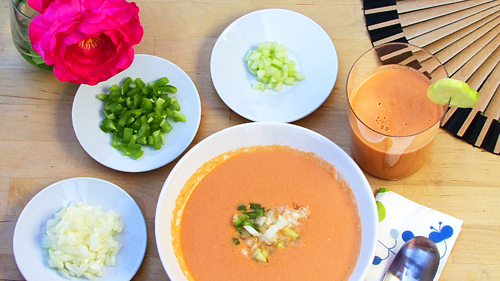

Gazpacho
Gazpacho

Gazpacho is a typical Andalusian soup make it out of mature tomatoes, red pepper, garlic, cucumber, onion and some old bread crushed, mixed with water, oil and salt. Normally it's been served cold and with a sides of cucumber, onion, pepper and bread, chopped in very small pieces and single dishes so each people could serve themself at their choice.
Ingredients:
- 1,5 Kg. of tomatoes, peeled and halved
- 1 cucumber, peeled and sliced
- 1 Green peper, sliced
- 1/2 onion, sliced
- 1 + 1/2 tablespoons red wine vinegar
- 1 clove garlic
- Salt to taste
- 1/4 cup extra-virgin olive oil
- 1/4 cup cold water, or as needed
Directions:
- Combine tomatoes, cucumber, bell pepper, onion, vinegar, garlic, and salt in the bowl of a food processor; pulse until blended. Pour olive oil in slowly, with the processor running, until gazpacho is smooth. Add small amounts of cold water as needed to achieve desired consistency.
- Serve gazpacho chilled with chopped onion, bell pepper, and cucumber sprinkled over each serving.